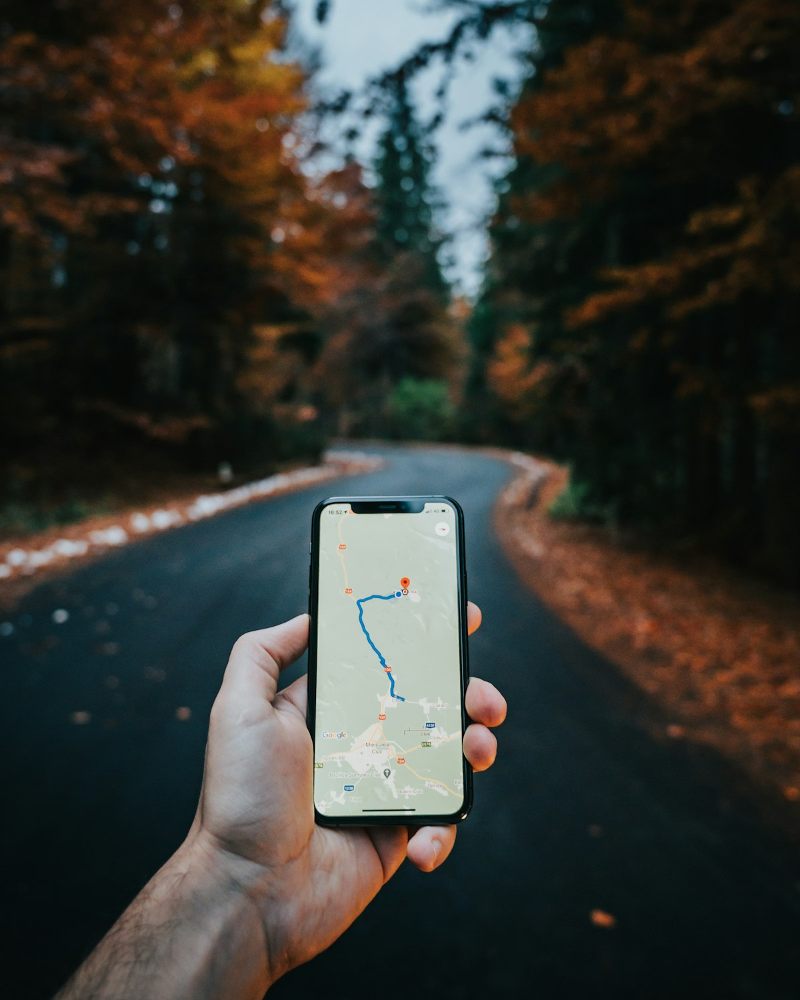

‹ Back to Life Coach AI
Feature Deep-Dive · Geolocation
📍 Always-On Location
The Data

Location Data
Continuous, precise GPS, tracked in the background, even when the app isn't open. Reveals home, work, routines, and visits.
Sensitive geo · EU + US
→
① What the Law Expects
EU · GDPR
Continuous precise location needs clear, specific consent
EU · ePrivacy
Consent before accessing the device's location
California · CCPA / CPRA
Precise geolocation is Sensitive PI · opt-in + limit use
US · FTC
No selling sensitive location (Kochava, X-Mode bans)
→
② What We Build
📲Just-in-time location permission
🎯Collect only the precision needed
🔄Background-use transparency + easy off
🎚️"Limit use" control (California)
🚫Never sell or share precise location
⏲️Auto-delete old location history
⚠️ Location is identity
A continuous location trail uniquely identifies a person and can expose health, religion, and relationships (clinics, places of worship, who they live with). Regulators treat precise geo as sensitive, even without a name attached.